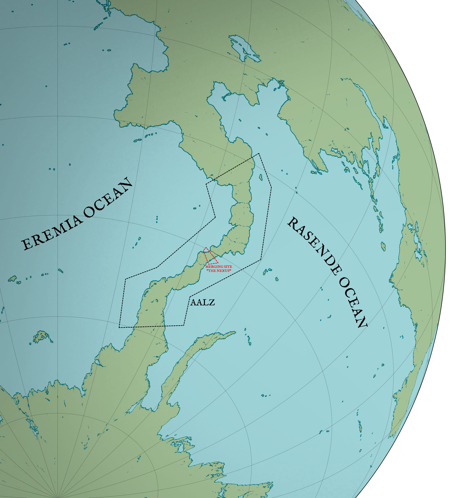
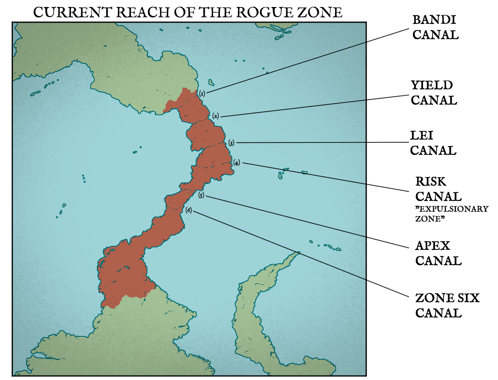

Kalypso is the third planet within the Eosian-Helion Star System, and the only known celestial body holding biological life. Although other bodies within the star system have been discovered to encompass surface waters akin to Kalypso, none have been able to sustain biological lifeforms on the scale that the habitable planet displays. It is one of the 17 “planets” that orbit the p-type binary star system that formed 4.8 billion years ago during the Haidean Eon, located in our Milky Way Galaxy. The planet also appears to have a faint ring of exceedingly small ice and rock particles that possibly originates from debris caused by foreign objects entering the Pavlic Radius of Kalypso.
Kalypso is one of four planets within the star system that does not share a conambit orbit with any other planet, in which two or more planets share an orbit that is far away enough not to be affected by the Pavlic Radius, but close enough to be observed as a singular orbit in an “orbit zone”.
Due to immense flooding from the sinking of the Malaya Continent, an event known as The Calamity, resulting from mass volcanic and tectonic activities, around one-third of the original landmass is underwater. This means nearly half of the planet’s surface is covered by ocean water. Although a good number of landmasses are uninhabitable due to this, the planet still has a population of around 9 billion, as recorded in the 1999 census. As of now, Kalypso is still in the Recuperation Era, as the effects of The Calamity linger geographically.
The planet is accompanied by one satellite, Selene. Origins of the moon is unknown as researchers still work to find out about the origins of Selene, and they believe they are getting close to three distinctive theories.
The planet’s terrain is made up of four supercontinents and one continent. In certain cultures of the world, Malaya isn’t considered a “continent” within conventions, but rather an archipelago due to its current nature.
The southern-most supercontinent in Kalypso. Although it naturally supports species that can resist the freezing temperatures, humans have made their way down to conduct research and operate mining drills for salt operations. Only the harshest of whiteouts occurs in this frozen wasteland, as temperatures drop to roughly -180°F at its worse.
The Artificial Aracinatic Landbridge Zone (AALZ) is a man-made landbridge that connects the south Orazian supercontinent to the Aracinatic supercontinent for salt mining operations. Eventually, canals would be built to facilitate transport. In the past, many wars and skirmishes would be fought for control of the landbridge, which would end in the entire area being a rogue state that is incredibly dangerous to pass by.
It is advised to be prepared against pirates and individual groups attempting to take over cargo ships, which
have been designated as a priority target due to potentially holding high-valued assets. In fact, the International Exporting Coalition gets paid by nations that frequent the landbridge to
provide escort services. Even with IEC influence, numerous mercenary companies compete for money to escort trade ships.
The same can be said for the Aracinatic Salt Mining Sectors, where battles would be fought over
drilling zones for ages. In the present day, conflict over the ownership of drilling zones would still occur, albeit less frequently than before.
Although the centuries-old origin may seem like an impossible feat, the landbridge was built off of pre-existing shallow lands submerged under the seawater. The completion of merging Aracinatus and Orazio effectively split off the Eremia and Rasende Ocean. The merging site between the two supercontinents would be nicknamed "The Nexus" as the pivotal landbridge link.
List of all canals:

